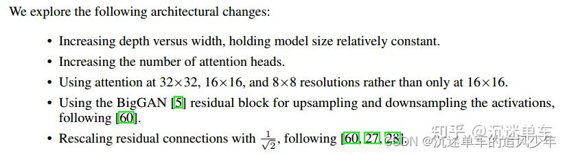
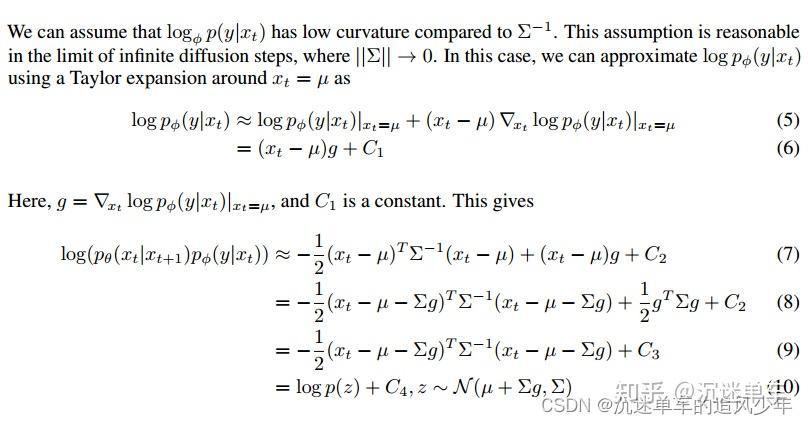

DDPM奠基之作：《Denoising Diffusion Probabilistic Models》
推荐理由：本文是DDPM的奠基之作，是本领域最经典的论文之一。其实扩散模型并不是一个新的概念，这篇论文第一个给出了严谨的数学推导，可以复现的代码，完善了整个推理过程。后面diffusion models相关的论文基本都继承了前向加噪-反向降噪-训练这样的体系。所以强烈推荐初学者精读这篇论文！
从DDPM到DDIM：《Denoising Diffusion Implicit Models》
推荐理由：作者使用简单的重参数化和混合学习目标来学习反向过程方差，该目标将VLB与DDPM的简化目标相结合。在混合目标下，所提出模型获得的对数似然比通过直接优化对数似然获得的对数似然更好，并发现后一个目标在训练期间具有更多的梯度噪声。最关键的是，原先的DDPM需要长达1000steps的推理步骤，而DDIM改善了反向扩散过程中的噪声水平，改变了递推公式，在更少的推理步骤(如100步)上取得了更好的结果。这项成果堪称革命性的，后面的大部分diffusion models论文(特别是运算量高的)都采用这一改进技术。
第一波高潮！首次击败GANs：《Diffusion Models Beat GANs on Image Synthesis》
推荐理由：其实前面diffusion models也只是在生成领域小火了一把，并没有引起太多人的关注。主要原因有两点：一是扩散模型并没有太多数学理论上的创新；二是在生成指标上不如GANs。而这篇论文的出现把diffusion models的推向了第一波高潮！这篇论文有三个需要重点学习的地方：
一是在Unet基础上有了很多改进的小trick(不亏是OpenAI的作品)，改进之后的Unet更能适配噪声，因此指标上也进步了很多：

如果看完这部分不妨反问自己这几个问题：模型结构是如何共享信息参数的？self-attention的作用是什么？预测噪声数据和预测真实数据有没有本质区别？为什么要分层设计？为什么一定要使用Unet结构？
二是classifier-guidance的引入，这段推导用了二阶泰勒展开，非常精彩！之后的很多论文将类别引导扩展到一般的条件引导上，包括后来大火的GLIDE。这在latent diffusion models没出来之前，是一项非常成功、被广泛使用的条件引导技术！

三是规范化的代码guided-diffusion。OpenAI的工匠精神，这份代码打磨得非常好，堪称工业级！后面很多顶会论文都是在这份代码的基础上改进的。如果想要学习diffusion models的代码，推荐以这份代码为基础。
GitHub地址
条件分类器技术进一步发展：《Classifier-Free Diffusion Guidance》
推荐理由：我推荐的其他论文基本上都发表机器学习/计算机视觉顶会，而这篇文章虽然只发表于cvpr workshop，但是作者提出了一个新的分数估计函数：有条件分数函数和无条件分数函数的线性组合，平衡了有条件的分数函数和无条件分数函数。当然在论文中作者先论述了《Diffusion Models Beat GANs on Image Synthesis》中提出的分类器技术的问题：额外训练一个分类器，并且往往会造成多样性下降的特点。当然这个问题也是必然出现的，因为分类器就是在生成质量和生成多样性中间做平衡。之所以推荐这篇论文，因为这项技术被后来的论文广泛应用，简单有用，值得学习！
GitHub地址
Image-to-Image经典之作《Palette: Image-to-Image Diffusion Models》
推荐理由：我不确定Palette是不是第一个实现diffusion models 图像翻译工作的，但是一定是第一个火起来让很多圈内人关注的！Palette从pix2pix GANs中获取灵感，能够实现图像着色、图像修复、图像剪裁恢复、图像解压缩(超分)等等任务，最大的意义在于让更多人看到了diffusion models在图像翻译领域的潜力。从cvpr 2021开始，海量的相关论文被发表。
GitHub地址
畅游多模态领域：GLIDE
推荐理由：经典的三篇text-to-image的论文：DALLE 2、Imagen、GLIDE。在上半年各领风骚，让text-to-image方向成为diffusion中最受关注的领域。这三篇论文最先推荐的GLIDE的原因是它最先放出完成代码和预训练模型。预训练模型很重要！因为text-to-image领域都是大模型，不放出模型的话，我们这些非大组(指能分到40块显卡以上的)研究者根本无法在这基础上自己做迁移学习。GLIDE的核心跨模态引导公式来自《Diffusion Models Beat GANs on Image Synthesis》中的分类器引导，不同的是，这篇文章并没有给出严谨的证明过程。但是实验结果表明确实取得了很好的效果，后面的研究者从中获得启示，把其他的多模态信息按照这种方法注入，也取得了非常惊艳的结果。
GitHub地址
stable diffusion的原型：《High-Resolution Image Synthesis with Latent Diffusion Models》
推荐理由：全体起立！终于讲到stable diffusion models了！这篇论文发表在cvpr 2022上，当时就受到了很多研究者们的关注，但是谁也没想到，一年后以latent diffusion models会孵化出stable diffusion这样彻底火出圈的作品。这篇论文有两个关键点值得关注：一是用encoder-decoder放缩到latent域上操作，又回到了生成领域最经典的结构，在latent域(即z)上操作，这种方法在vae上也算常用。二是cross-attention的结构，这种方法早在2020年的论文handwriting diffusion上就用过，但是当时并没有引起广泛的注意。在这之后cross-attention成为多模态的一种常用方法，成为新的常用条件扩散模型。
GitHub地址
高调进军视频领域：《Video Diffusion Models》
推荐理由：有位“诗人”曾经说过：站在风口上X都能飞。这篇论文出现的时候，diffusion models已经在图像、多模态、3D等领域大杀四方了。video生成很显然是下一个风口，这时候谷歌研究院的作品video diffusion models横空出世。这篇论文需要注意两个点：一是怎样引入时序信息的方法，很值得借鉴。二是梯度引导法是首次被提出，当时我写的博客中说如果好用肯定会很快流行。事实证明，谷歌出品必属精品，果然流行的一番！
GitHub地址
了不起的attention：《Prompt-to-Prompt Image Editing with Cross Attention Control》
推荐理由：在今年的ICLR中，diffusion models超过图神经网络，成为投稿最多的主题。这几千篇投稿中，这篇论文取得了审稿人的一致accept好评。这篇文章沿用了latent diffusion models提出了cross-attention的结构，但是做了不少改进，特别需要注意的是可解释性问题，作者将QKV可视化，替换attention map达到控制的目的。这种控制技术相比于LDM更细腻，更有说服力。
博客地址：【ICLR 2023】Diffusion Models扩散模型和Prompt Learning提示学习：prompt-to-prompt
GitHub地址
Unet已死，transformer当立！《Scalable Diffusion Models with Transformers》
推荐理由：Unet本来是发源于医疗图像分割的backbone，后来pix2pix GANs开始引入到生成领域，diffusion models的研究者们一直想替换掉这个backbone，用更原生的方法。在语音领域、时间序列领域，早在2020年就有论文引入transformer作为backbone。不过笔者尝试将其引入到二维图像生成上，并没有取得好的效果。最近的一项研究成果成功用改进版本的transformer替换掉Unet，并取得了更好的效果。笔者最近复现了代码，大为震撼！我觉得这项研究生过会很快流行，强烈推荐！
GitHub地址
end
其实经典的论文还有很多，例如SDE相关的那条发展线，特别是songyang大佬的几篇论文，都值得反复品读；还有diffusion models在3D领域、语音领域等都表现得非常出色，其中有很多经典的论文没有列入；diffusion models的发表了很多加速采样方法的论文，我只列了几个后来被大家广泛使用的、有革命性成果的，这方面还有很多很精彩的论文本篇博客没有列入，略有遗憾！我的学识很有限，欢迎大佬们在评论区讨论！